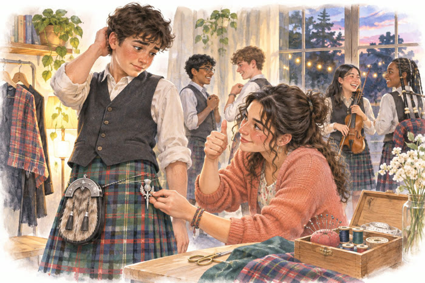

Listen to the text
Speed:

Last summer our family received an invitation with a gold stamp. My cousin Olha, who has lived in Edinburgh for six years, was getting married to a Scottish man called Fraser. The wedding was in August, and all of us were invited. "What shall we wear?" asked Mum the same evening. In our family a special occasion always starts with this question. Mum chose a long blue dress and a light jacket. Dad took his only suit out of the wardrobe and bought a new shirt. I wanted to go in jeans and my favourite T-shirt, but Mum said that jeans were not appropriate for a wedding. "You can be casual every day," she said. "A wedding is a time to dress up." So I got a green skirt and a white blouse, and I had to admit that the outfit looked good. The real problem was my brother Taras, who is seventeen. A week before the trip Olha sent him a message: "Fraser's family would like all the young men to wear kilts. We will hire one for you." Taras read it three times. "A kilt is a skirt," he said. "I am not wearing a skirt." "It is not a skirt," said Dad. "It is the national dress of Scottish men. Soldiers wore kilts." "With knee socks," I added. Taras threw a jumper at me. In Edinburgh Fraser's brother brought the outfit to our hotel: a kilt in dark green and blue squares, a white shirt, a short black jacket, long socks and a small leather bag for the belt. Taras put everything on and looked in the mirror for a long time. Then he took off his trainers and asked for the proper shoes. The wedding was held in an old stone church. When we arrived, a man in a kilt was playing the bagpipes at the door. I had never heard them so close. The sound was so loud and so proud that I got goose bumps. Thirty men in kilts were standing in the yard, and my brother was one of them. He danced all evening. He learnt two Scottish dances, and he didn't sit down once. On the way home Mum asked him, "So, how was the skirt?" "It is not a skirt, Mum," said Taras seriously. "It is a kilt. And I looked great."
Tap any sentence to hear it again.
Сподобалось? На сайті ще більше матеріалів для вчителів!
Reader, презентації, ігри, діагностичні та контрольні роботи до підручників 1-11 класів.
Перейти на сайт materials.allaenglish.com